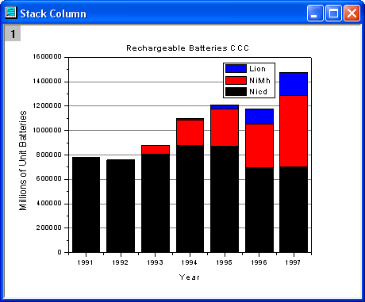
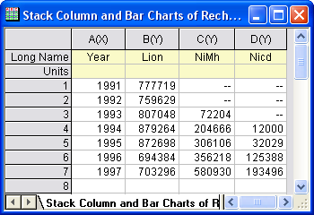
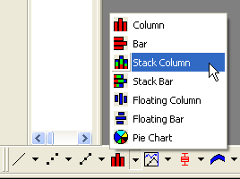
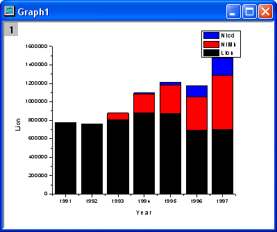
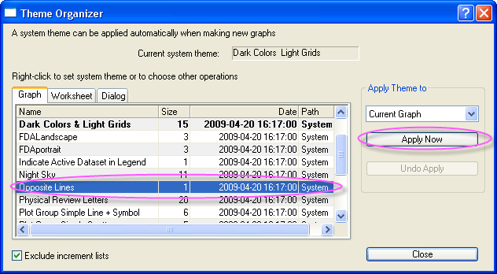
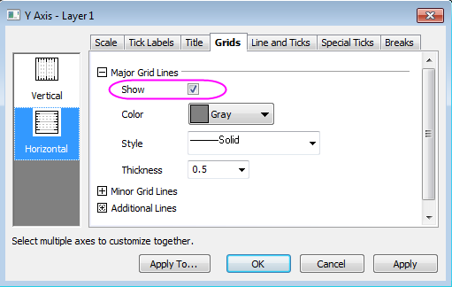

Gestapeltes Säulen- und Balkendiagramm für Akku-Statistiken
StackColumn-Rechargeable-Battery
Zusammenfassung
Dieses Tutorial zeigt Ihnen, wie Sie ein gestapeltes Säulen- und Balkendiagramm erstellen.
-
- 
Origin-Version mind. erforderlich: Origin 2015 SR0
Was Sie lernen werden
Dieses Kapitel zeigt Ihnen, wie Sie:
- ein gestapeltes Säulen- und Balkendiagramm erstellen,
- das Diagramm benutzerdefiniert anpassen.
Schritte
- Erstellen Sie ein neues Arbeitsblatt. Importieren Sie die Beispieldaten.
- 
- Markieren Sie alle Spalten und klicken Sie auf die Schaltfläche Gestapelte Säulen auf der Symbolleiste 2D-Grafiken.
- 
- Das Diagramm sollte folgendermaßen aussehen:
- 
- Danach wird ein Diagrammdesign angewendet, um eine obere X-Achse und eine rechte Y-Achse hinzuzufügen. Wählen Sie Einstellungen: Designs verwalten, um den Dialog Designs verwalten zu öffnen. Aktivieren Sie die Registerkarte Diagramm und wählen Sie Opposite Lines aus der Tabelle. Klicken Sie auf die Schaltfläche Jetzt anwenden. Klicken Sie dann auf die Schaltfläche Schließen, um den Dialog zu schließen.
- 
- Klicken Sie doppelt auf die Y-Achse, um den Dialog Achsen zu öffnen. Wählen Sie das Symbol Horizontal auf der Registerkarte Gitternetze und aktivieren Sie das Kontrollkästchen Zeigen im Abschnitt Hauptgitternetzlinien. Klicken Sie auf die Schaltfläche OK, um Gitternetzlinien zu dem Diagramm hinzuzufügen.
- 
- Wechseln Sie zur Registerkarte Titel, um den Titel der Y-Achse in Millions of Unit Batteries zu ändern. Wählen Sie dann das Symbol Oben und fügen Sie den Diagrammtitel Rechargeable Batteries CCC hinzu. Das Diagramm sollte folgendermaßen aussehen:
Beispieldaten
Laden Sie die Datei Stack_Column_and_Bar_Charts.txt unter http://www.originlab.com/ftp/graph_gallery/data/Stack_Column_and_Bar_Charts.txt herunter. Klicken Sie auf die Schaltfläche ASCII-Dateidaten  und wählen Sie die Datei aus, um sie in Origin zu importieren.
und wählen Sie die Datei aus, um sie in Origin zu importieren.
Die folgende Tabelle enthält einen Teil der Beispieldaten.
| year(X) |
Nicd(Y) |
NiMh(Y) |
Lion(Y) |
| 1991 |
777719 |
-- |
-- |
| 1992 |
759629 |
-- |
-- |
| 1993 |
807048 |
72204 |
-- |
| 1994 |
879264 |
204666 |
12000 |
| 1995 |
872698 |
306106 |
32029 |
| 1996 |
694384 |
356218 |
125388 |
| 1997 |
703296 |
580930 |
193496 |